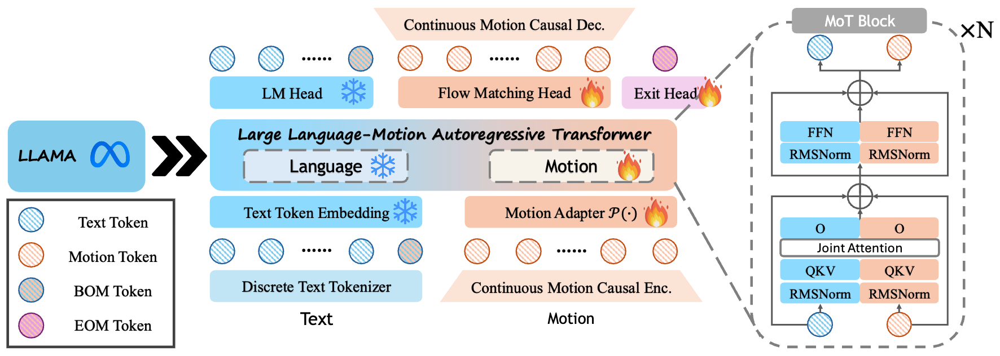

Recent progress in large models has led to significant advances in unified multimodal generation and understanding. However, the development of models that unify motion-language generation and understanding remains largely underexplored. Existing approaches often fine-tune large language models (LLMs) on paired motion-text data, which can result in catastrophic forgetting of linguistic capabilities due to the limited scale of available text-motion pairs. Furthermore, prior methods typically convert motion into discrete representations via quantization to integrate with language models, introducing substantial jitter artifacts from discrete tokenization.
To address these challenges, we propose LLaMo, a unified framework that extends pretrained LLMs through a modality-specific Mixture-of-Transformers (MoT) architecture. This design inherently preserves the language understanding of the base model while enabling scalable multimodal adaptation. We encode human motion into a causal continuous latent space and maintain the next-token prediction paradigm in the decoder-only backbone through a lightweight flow-matching head, allowing for streaming motion generation in real-time (>30 FPS). Leveraging the comprehensive language understanding of pretrained LLMs and large-scale motion-text pretraining, our experiments demonstrate that LLaMo achieves high-fidelity text-to-motion generation and motion-to-text captioning in general settings, especially zero-shot motion generation, marking a significant step towards a general unified motion-language large model.
Videos load as you scroll. Click any video to open the fullscreen player.
LLaMo inherits the multilingual capability of pretrained LLMs, enabling motion generation directly from non-English prompts without any multilingual training.
@inproceedings{li2026llamo,
title = {LLaMo: Scaling Pretrained Language Models for Unified Motion
Understanding and Generation with Continuous Autoregressive Tokens},
author = {Li, Zekun and An, Sizhe and Tang, Chengcheng and Guo, Chuan and
Shugurov, Ivan and Zhang, Linguang and Zhao, Amy and
Sridhar, Srinath and Tao, Lingling and Mittal, Abhay},
booktitle = {Proceedings of the IEEE/CVF Conference on Computer Vision
and Pattern Recognition (CVPR)},
year = {2026}
}